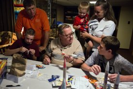
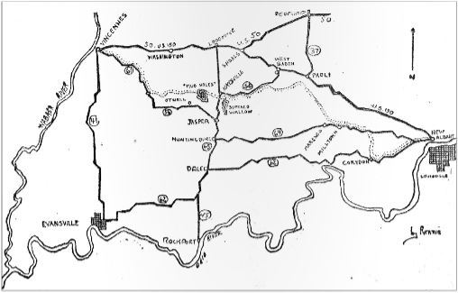
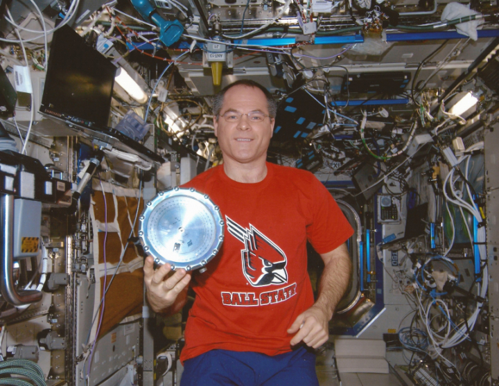

Feature
Tradition of respect
The lengths one veteran goes to honor the dead in a small Indiana town.
Photo: Dave Weathwax | The Herald

View more
Feature
Aerospace interest launches family tradition
Former teacher Jim Vaal shot model rockets off with his family for 15 years. This year the kids helped the master with his craft.
Photo: Alisha Jucevic | The Herald

View more
Enterprise
Feature
Buffalo Trace a trail of mystery, movement
Indiana, as we know it, wouldn’t exist without this path.
Feature
‘The country’s most vital, precious objects’
What it means to Dubois County residents when American Flags are retired.
Photo: Sarah Ann Jump | The Dubois County Herald

View more
Feature
Series
Moon landing still impacting Muncie 45 years later
A three-part series looking into how the Apollo 11 moon landing continues to affect Muncie 45 years later. The stories cover a Model Aviation Museum, siblings separated by the threshold of our world and Ball State researchers that will help make a mission to Mars possible.